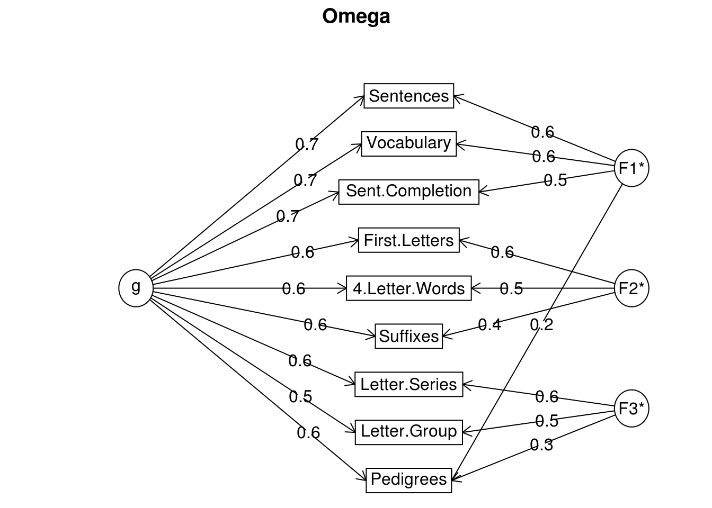

Capítulo 5 Análise de Fatores
O objetivo principal da Análise de Fatores (FA) é identificar um número reduzido de variáveis latentes ou constructos que explicam os dados observados ou sob estudo.
No caso de redução da dimensão o problema (PCA 4 ou CA 3) pode ser resolvido pelo método SVD da matriz de dados original, mas a solução mais comum é a utilização de PCA ou FA da matriz de covariância ou correlação.
5.1 Algorítmos disponíveis na biblioteca psych
Ao todo, temos disponível 5 algorítimos para uso com FA na biblioteca psych por meio do comando fa, são eles:
- minres: resíduo mínimo
- principal axis: utiliza sucessivas decomposições dos autovalores na matriz de correlação
- weighted least squares: mínimos quadrado ponderados
- generalized least squares: mínimos quadrados genrealizados
- maximum likelihood: máxima verossimilhança
5.2 Métodos de rotação (psych)
Referente a forma ou método de rotação temos as opções a seguir:
- ortogonais: “none”, “varimax”, “quartimax”, “bentlerT”, “equamax”, “varimin”, “geominT” e “bifactor”
- oblíquas: “promax”, “oblimin”, “simplimax”, “bentlerQ,”geominQ“,”biquartimin" e “cluster”
5.3 Exemplo utilizando dataset Harman 24 e comparando com PCA
#using the Harman 24 mental tests, compare a principal factor with a principal components solution
pc <- principal(Harman74.cor$cov,4,rotate="varimax") #principal components
pa <- fa(Harman74.cor$cov,4,fm="pa" ,rotate="varimax") #principal axis
uls <- fa(Harman74.cor$cov,4,rotate="varimax") #unweighted least squares is minres
wls <- fa(Harman74.cor$cov,4,fm="wls") #weighted least squares## Loading required namespace: GPArotation#to show the loadings sorted by absolute value
print(uls,sort=TRUE)## Factor Analysis using method = minres
## Call: fa(r = Harman74.cor$cov, nfactors = 4, rotate = "varimax")
## Standardized loadings (pattern matrix) based upon correlation matrix
## item MR1 MR3 MR2 MR4 h2 u2 com
## WordMeaning 9 0.81 0.20 0.04 0.23 0.74 0.26 1.3
## SentenceCompletion 7 0.81 0.20 0.15 0.07 0.72 0.28 1.2
## PargraphComprehension 6 0.77 0.20 0.07 0.23 0.69 0.31 1.4
## GeneralInformation 5 0.74 0.19 0.21 0.15 0.65 0.35 1.4
## WordClassification 8 0.57 0.34 0.24 0.13 0.51 0.49 2.2
## VisualPerception 1 0.16 0.69 0.19 0.16 0.56 0.44 1.4
## PaperFormBoard 3 0.14 0.57 -0.02 0.11 0.36 0.64 1.2
## Flags 4 0.23 0.53 0.10 0.08 0.35 0.65 1.5
## SeriesCompletion 23 0.37 0.50 0.24 0.24 0.50 0.50 2.9
## Cubes 2 0.12 0.44 0.08 0.10 0.22 0.78 1.3
## Deduction 20 0.38 0.40 0.12 0.30 0.41 0.59 3.0
## ProblemReasoning 22 0.37 0.40 0.12 0.30 0.40 0.60 3.1
## Addition 10 0.17 -0.12 0.83 0.17 0.76 0.24 1.2
## CountingDots 12 0.02 0.21 0.72 0.09 0.56 0.44 1.2
## StraightCurvedCapitals 13 0.19 0.44 0.53 0.08 0.51 0.49 2.3
## Code 11 0.18 0.12 0.51 0.37 0.45 0.55 2.2
## ArithmeticProblems 24 0.37 0.16 0.50 0.30 0.50 0.50 2.8
## NumericalPuzzles 21 0.17 0.38 0.44 0.22 0.42 0.58 2.8
## ObjectNumber 17 0.14 0.06 0.22 0.57 0.40 0.60 1.4
## WordRecognition 14 0.20 0.05 0.08 0.55 0.35 0.65 1.3
## FigureRecognition 16 0.07 0.41 0.06 0.53 0.45 0.55 2.0
## NumberRecognition 15 0.12 0.12 0.07 0.52 0.30 0.70 1.3
## NumberFigure 18 0.03 0.29 0.34 0.46 0.41 0.59 2.6
## FigureWord 19 0.15 0.24 0.16 0.37 0.24 0.76 2.6
##
## MR1 MR3 MR2 MR4
## SS loadings 3.65 2.87 2.66 2.29
## Proportion Var 0.15 0.12 0.11 0.10
## Cumulative Var 0.15 0.27 0.38 0.48
## Proportion Explained 0.32 0.25 0.23 0.20
## Cumulative Proportion 0.32 0.57 0.80 1.00
##
## Mean item complexity = 1.9
## Test of the hypothesis that 4 factors are sufficient.
##
## The degrees of freedom for the null model are 276 and the objective function was 11.44
## The degrees of freedom for the model are 186 and the objective function was 1.71
##
## The root mean square of the residuals (RMSR) is 0.04
## The df corrected root mean square of the residuals is 0.05
##
## Fit based upon off diagonal values = 0.98
## Measures of factor score adequacy
## MR1 MR3 MR2 MR4
## Correlation of scores with factors 0.93 0.87 0.91 0.82
## Multiple R square of scores with factors 0.87 0.76 0.83 0.68
## Minimum correlation of possible factor scores 0.73 0.52 0.66 0.36#then compare with a maximum likelihood solution using factanal
mle <- factanal(covmat=Harman74.cor$cov,factors=4)
factor.congruence(list(mle,pa,pc,uls,wls))## Factor1 Factor2 Factor3 Factor4 PA1 PA3 PA2 PA4 RC1 RC3 RC2
## Factor1 1.00 0.61 0.46 0.56 1.00 0.61 0.46 0.55 1.00 0.54 0.44
## Factor2 0.61 1.00 0.50 0.61 0.61 1.00 0.50 0.60 0.60 0.99 0.49
## Factor3 0.46 0.50 1.00 0.57 0.46 0.50 1.00 0.56 0.45 0.44 1.00
## Factor4 0.56 0.61 0.57 1.00 0.56 0.62 0.58 1.00 0.55 0.55 0.56
## PA1 1.00 0.61 0.46 0.56 1.00 0.61 0.46 0.55 1.00 0.54 0.44
## PA3 0.61 1.00 0.50 0.62 0.61 1.00 0.50 0.61 0.61 0.99 0.50
## PA2 0.46 0.50 1.00 0.58 0.46 0.50 1.00 0.57 0.46 0.44 1.00
## PA4 0.55 0.60 0.56 1.00 0.55 0.61 0.57 1.00 0.54 0.54 0.55
## RC1 1.00 0.60 0.45 0.55 1.00 0.61 0.46 0.54 1.00 0.53 0.43
## RC3 0.54 0.99 0.44 0.55 0.54 0.99 0.44 0.54 0.53 1.00 0.43
## RC2 0.44 0.49 1.00 0.56 0.44 0.50 1.00 0.55 0.43 0.43 1.00
## RC4 0.47 0.52 0.48 0.99 0.47 0.53 0.49 0.99 0.46 0.47 0.47
## MR1 1.00 0.61 0.46 0.56 1.00 0.61 0.46 0.55 1.00 0.54 0.44
## MR3 0.61 1.00 0.50 0.61 0.61 1.00 0.50 0.60 0.60 0.99 0.49
## MR2 0.46 0.50 1.00 0.57 0.46 0.50 1.00 0.56 0.45 0.44 1.00
## MR4 0.56 0.61 0.57 1.00 0.56 0.62 0.58 1.00 0.55 0.55 0.56
## WLS1 0.98 0.47 0.30 0.40 0.98 0.48 0.30 0.39 0.98 0.41 0.28
## WLS3 0.36 0.95 0.41 0.41 0.36 0.95 0.41 0.39 0.35 0.97 0.41
## WLS2 0.23 0.22 0.95 0.36 0.23 0.22 0.95 0.35 0.22 0.16 0.95
## WLS4 0.28 0.40 0.36 0.94 0.28 0.41 0.37 0.94 0.27 0.36 0.35
## RC4 MR1 MR3 MR2 MR4 WLS1 WLS3 WLS2 WLS4
## Factor1 0.47 1.00 0.61 0.46 0.56 0.98 0.36 0.23 0.28
## Factor2 0.52 0.61 1.00 0.50 0.61 0.47 0.95 0.22 0.40
## Factor3 0.48 0.46 0.50 1.00 0.57 0.30 0.41 0.95 0.36
## Factor4 0.99 0.56 0.61 0.57 1.00 0.40 0.41 0.36 0.94
## PA1 0.47 1.00 0.61 0.46 0.56 0.98 0.36 0.23 0.28
## PA3 0.53 0.61 1.00 0.50 0.62 0.48 0.95 0.22 0.41
## PA2 0.49 0.46 0.50 1.00 0.58 0.30 0.41 0.95 0.37
## PA4 0.99 0.55 0.60 0.56 1.00 0.39 0.39 0.35 0.94
## RC1 0.46 1.00 0.60 0.45 0.55 0.98 0.35 0.22 0.27
## RC3 0.47 0.54 0.99 0.44 0.55 0.41 0.97 0.16 0.36
## RC2 0.47 0.44 0.49 1.00 0.56 0.28 0.41 0.95 0.35
## RC4 1.00 0.47 0.52 0.48 0.99 0.32 0.32 0.28 0.97
## MR1 0.47 1.00 0.61 0.46 0.56 0.98 0.36 0.23 0.28
## MR3 0.52 0.61 1.00 0.50 0.61 0.47 0.95 0.22 0.40
## MR2 0.48 0.46 0.50 1.00 0.57 0.30 0.41 0.95 0.36
## MR4 0.99 0.56 0.61 0.57 1.00 0.40 0.41 0.36 0.94
## WLS1 0.32 0.98 0.47 0.30 0.40 1.00 0.22 0.09 0.13
## WLS3 0.32 0.36 0.95 0.41 0.41 0.22 1.00 0.17 0.23
## WLS2 0.28 0.23 0.22 0.95 0.36 0.09 0.17 1.00 0.20
## WLS4 0.97 0.28 0.40 0.36 0.94 0.13 0.23 0.20 1.00#note that the order of factors and the sign of some of factors may differ
#finally, compare the unrotated factor, ml, uls, and wls solutions
wls <- fa(Harman74.cor$cov,4,rotate="none",fm="wls")
pa <- fa(Harman74.cor$cov,4,rotate="none",fm="pa")
minres <- factanal(factors=4,covmat=Harman74.cor$cov,rotation="none")
mle <- fa(Harman74.cor$cov,4,rotate="none",fm="mle")
uls <- fa(Harman74.cor$cov,4,rotate="none",fm="uls")
factor.congruence(list(minres,mle,pa,wls,uls))## Factor1 Factor2 Factor3 Factor4 ML1 ML2 ML3 ML4 PA1 PA2
## Factor1 1.00 0.11 0.25 0.06 1.00 0.11 0.25 0.06 1.00 -0.04
## Factor2 0.11 1.00 0.06 0.07 0.11 1.00 0.06 0.07 0.14 0.98
## Factor3 0.25 0.06 1.00 0.01 0.25 0.06 1.00 0.01 0.30 0.10
## Factor4 0.06 0.07 0.01 1.00 0.06 0.07 0.01 1.00 0.07 0.13
## ML1 1.00 0.11 0.25 0.06 1.00 0.11 0.25 0.06 1.00 -0.04
## ML2 0.11 1.00 0.06 0.07 0.11 1.00 0.06 0.07 0.14 0.98
## ML3 0.25 0.06 1.00 0.01 0.25 0.06 1.00 0.01 0.30 0.10
## ML4 0.06 0.07 0.01 1.00 0.06 0.07 0.01 1.00 0.07 0.13
## PA1 1.00 0.14 0.30 0.07 1.00 0.14 0.30 0.07 1.00 0.00
## PA2 -0.04 0.98 0.10 0.13 -0.04 0.98 0.10 0.13 0.00 1.00
## PA3 -0.05 -0.08 0.95 -0.04 -0.05 -0.08 0.95 -0.04 0.00 0.00
## PA4 -0.01 -0.08 0.02 0.99 -0.01 -0.08 0.02 0.99 0.00 0.00
## WLS1 1.00 0.14 0.30 0.07 1.00 0.14 0.30 0.07 1.00 0.00
## WLS2 -0.04 0.98 0.09 0.13 -0.04 0.98 0.09 0.13 0.00 1.00
## WLS3 -0.05 -0.07 0.95 -0.04 -0.05 -0.07 0.95 -0.04 0.00 0.01
## WLS4 -0.01 -0.07 0.02 0.99 -0.01 -0.07 0.02 0.99 0.00 0.01
## ULS1 1.00 0.11 0.25 0.06 1.00 0.11 0.25 0.06 1.00 -0.04
## ULS2 0.11 1.00 0.06 0.07 0.11 1.00 0.06 0.07 0.14 0.98
## ULS3 0.25 0.06 1.00 0.01 0.25 0.06 1.00 0.01 0.30 0.10
## ULS4 0.06 0.07 0.01 1.00 0.06 0.07 0.01 1.00 0.07 0.13
## PA3 PA4 WLS1 WLS2 WLS3 WLS4 ULS1 ULS2 ULS3 ULS4
## Factor1 -0.05 -0.01 1.00 -0.04 -0.05 -0.01 1.00 0.11 0.25 0.06
## Factor2 -0.08 -0.08 0.14 0.98 -0.07 -0.07 0.11 1.00 0.06 0.07
## Factor3 0.95 0.02 0.30 0.09 0.95 0.02 0.25 0.06 1.00 0.01
## Factor4 -0.04 0.99 0.07 0.13 -0.04 0.99 0.06 0.07 0.01 1.00
## ML1 -0.05 -0.01 1.00 -0.04 -0.05 -0.01 1.00 0.11 0.25 0.06
## ML2 -0.08 -0.08 0.14 0.98 -0.07 -0.07 0.11 1.00 0.06 0.07
## ML3 0.95 0.02 0.30 0.09 0.95 0.02 0.25 0.06 1.00 0.01
## ML4 -0.04 0.99 0.07 0.13 -0.04 0.99 0.06 0.07 0.01 1.00
## PA1 0.00 0.00 1.00 0.00 0.00 0.00 1.00 0.14 0.30 0.07
## PA2 0.00 0.00 0.00 1.00 0.01 0.01 -0.04 0.98 0.10 0.13
## PA3 1.00 0.00 0.00 -0.01 1.00 0.00 -0.05 -0.08 0.95 -0.04
## PA4 0.00 1.00 0.00 -0.01 0.00 1.00 -0.01 -0.08 0.02 0.99
## WLS1 0.00 0.00 1.00 0.00 0.00 0.00 1.00 0.14 0.30 0.07
## WLS2 -0.01 -0.01 0.00 1.00 0.00 0.00 -0.04 0.98 0.09 0.13
## WLS3 1.00 0.00 0.00 0.00 1.00 0.00 -0.05 -0.07 0.95 -0.04
## WLS4 0.00 1.00 0.00 0.00 0.00 1.00 -0.01 -0.07 0.02 0.99
## ULS1 -0.05 -0.01 1.00 -0.04 -0.05 -0.01 1.00 0.11 0.25 0.06
## ULS2 -0.08 -0.08 0.14 0.98 -0.07 -0.07 0.11 1.00 0.06 0.07
## ULS3 0.95 0.02 0.30 0.09 0.95 0.02 0.25 0.06 1.00 0.01
## ULS4 -0.04 0.99 0.07 0.13 -0.04 0.99 0.06 0.07 0.01 1.00#in particular, note the similarity of the mle and min res solutions
#note that the order of factors and the sign of some of factors may differ 5.4 Exemplo: Entender a estrutura utilizando FA e o comando omega (psych)
A função omega utilizado Análise de Fatores Exploratoria (EFA) para estimar coeficientes de relação intrínseca (padrões)
om <- omega(Thurstone)
round(om$omega.group,2)## total general group
## g 0.93 0.74 0.16
## F1* 0.92 0.58 0.35
## F2* 0.83 0.50 0.32
## F3* 0.79 0.47 0.32#fraction of reliable that is general variance
round(om$omega.group[2]/om$omega.group[1],2) ## general
## g 0.79
## F1* 0.63
## F2* 0.61
## F3* 0.59#fraction of reliable that is group variance
round(om$omega.group[3]/om$omega.group[1],2) ## group
## g 0.17
## F1* 0.37
## F2* 0.39
## F3* 0.41